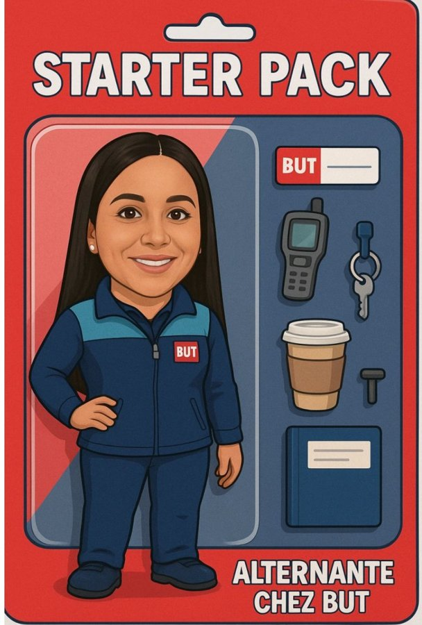

« Tout a commencé en vente, sur le terrain, au contact direct des clients. »
En trois ans d'alternance chez BUT Cabriès, ce premier poste de vendeuse s'est transformé en véritable montée en compétences : j'ai appris à connaître un rayon de l'intérieur avant d'en prendre la responsabilité, puis à en piloter la performance au quotidien.

Vendeuse Petits Meubles
Les bases du métier : accueil client, mise en rayon, premiers réflexes commerciaux.
Gestionnaire de rayon Électroménager
Un premier pas vers la gestion : organisation des flux, suivi des ventes, décisions d'implantation.
Apprentie Responsable de rayon
Le pilotage complet d'un univers générant plus d'1M€ de chiffre d'affaires annuel : stocks, commandes, inventaires, performance.
Cette progression, je la construis en parallèle d'un BUT Techniques de Commercialisation à l'IUT d'Aix-Marseille, parcours Marketing & Management du Point de Vente, après un DUT obtenu en fin de 2ᵉ année et un Baccalauréat technologique STMG Gestion Finance.
Un engagement associatif est venu compléter cette formation : bénévole au pôle achat de l'épicerie solidaire Agoraé Saint-Jérôme, où j'ai géré approvisionnements et budget d'un large portefeuille de fournisseurs.
Sur le terrain comme en cours, ce sont toujours les mêmes réflexes qui reviennent : organisation, esprit d'équipe et polyvalence.
J'ai appris à m'appuyer sur des outils concrets, comme Salesforce, l'analyse de KPI et le reporting commercial, pour transformer ces qualités en résultats, tout en gardant une vraie capacité d'écoute et de force de proposition face aux équipes comme aux clients.
📄 Voir mon CV en PDF« La suite s'écrit d'abord ailleurs, avant de revenir vers la gestion. »
Je prévois une année de césure pour perfectionner mon anglais lors d'un stage linguistique à Dubaï, une étape volontairement choisie avant de reprendre mes études : gagner en aisance à l'international, sortir de mon environnement habituel, et revenir avec un regard neuf sur le commerce.
À mon retour, j'intégrerai un Master en alternance, à Kedge ou dans une autre école ciblée, pour développer mes compétences en gestion de production, logistique et achats. L'objectif : transformer cette expérience terrain de trois ans en une expertise plus large, capable de piloter des projets à plus grande échelle.